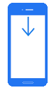

打开虚拟键盘，在其上方显示包含功能和其他特殊键的滚动键栏。双击修改键（例如，Shift 或 Ctrl）以按住该键。某些键（例如 Scroll Lock）不可用。
打开虚拟键盘，在其上方显示包含功能和其他特殊键的滚动键栏。双击修改键（例如，Shift 或 Ctrl）以按住该键。某些键（例如 Scroll Lock）不可用。
注意：如果检测到硬件键盘，则 i 显示虚拟键盘。但是，点击键盘图标仍会打开滚动键栏。
使用 VNC Viewer
您的手指移动鼠标光标而不是单击您触摸的位置，就像您对触摸屏所期望的那样。这使您可以更精确地控制高分辨率计算机桌面。
| 手势 | 动作 | 说明 |
|---|---|---|
| 放大 | 将两个手指捏在一起缩小，或分开放大。 用两根手指捏缩放。 | |
| 鼠标移动 | 将一根手指放在屏幕上并拖动以定位鼠标光标（从手指下方偏移，以便您始终可以看到它）。 用一根手指触摸并拖动以定位鼠标光标。 | |
| 左键单击 | 用一根手指点击鼠标光标所在位置（而不是手指）上的鼠标左键。 用一根手指点击左键单击。 | |
| 双击 | 用一根手指点击两次，在鼠标光标所在的位置（而不是手指）双击鼠标左键。 用一根手指双击即可双击。 | |
| 右键点击 | 用两根手指点击鼠标光标所在位置（而不是手指）上的鼠标右键。 用两根手指点按即可右键单击。 | |
| 中键点击 | 用三根手指点击鼠标光标所在位置（而不是手指）上的鼠标中键。 点击三个手指点击鼠标中键。 | |
| 滚动 | 将两根手指放在屏幕上并向上或向下拖动以垂直滚动当前应用程序，或向左或向右拖动以水平滚动。 用两根手指触摸并拖动以垂直或水平滚动。 | |
| 拖放或选择文本 | 点按两次，按住第二个点按，然后拖动以移动桌面对象（例如对话框或图标），或选择特定的文本正文。 双击并拖动以单击并按住，或选择文本。 | |
|  | 显示工具栏 | 从设备顶部向下滑动以显示工具栏。默认情况下，工具栏是固定的。 |
注意
打开虚拟键盘，在其上方显示包含功能和其他特殊键的滚动键栏。双击修改键（例如，Shift 或 Ctrl）以按住该键。某些键（例如 Scroll Lock）不可用。
注意：如果检测到硬件键盘，则 i 显示虚拟键盘。但是，点击键盘图标仍会打开滚动键栏。